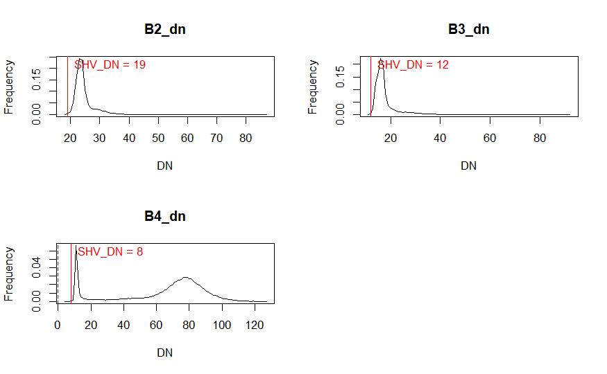
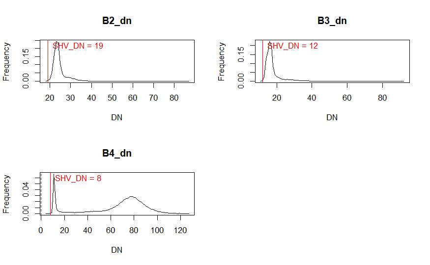

4 Week3: Correction
4.1 Summary
This session introduced the fundamentals and applications of remote sensing in urban and environmental contexts, focusing on data corrections, data joining, and enhancement techniques.Including:
Remote Sensing Data and Corrections: It covers geometric, atmospheric, orthorectification/topographic, and radiometric corrections. These corrections are crucial for preparing the data for accurate analysis by correcting distortions and errors introduced during data acquisition.
Data Joining and Enhancement: Techniques such as feathering and image enhancement are discussed. These methods improve the visual quality of satellite images, making them more suitable for analysis and interpretation.
How to use tool: The session introduced various tools and methods used in remote sensing, including the use of multispectral and radar satellite imagery for biodiversity monitoring and conservation science.
Practical Result
This week, we settle down to correct raw satelliteimagery with Dark Object Subtraction (DOS) - - We can use this formula to correct atmospheric effects, and relating parameters can be included in U.S. Analysis Read Dataset (ARD) that includes a bundle of data (Top of Atmosphere (TOA) reflectance, TOA Brightness Temperature, Surface Reflectance , Surface Temperature and Quality Assessment) in a specific US grid strucutre.
- Then still focus on spectral characteristic, we try to detect specific area based on their spectral trait. Cretain formular for each type of landuse.PCA is also used to reduce the dimensionality and Transform multi-spectral data into uncorrelated and smaller dataset
 

4.2 Application
In exploring the application of remote sensing data and methods mentioned in the course, several studies highlight types of correction,not only atmospheric correction, but also geometric or data fusion corrections,etc.:
Schulte to Bühne and Pettorelli (2018) demonstrated the integration of multispectral and radar satellite imagery to inform biodiversity monitoring and conservation science. This study exemplifies the power of data fusion in enhancing the quality and utility of remote sensing data for ecological research (Schulte to Bühne, H., Pettorelli, N., 2018. Methods in Ecology and Evolution).
The use of atmospheric correction techniques, such as Dark Object Subtraction (DOS), to improve the accuracy of satellite imagery analysis is well-documented. This approach corrects for atmospheric effects on satellite data, enhancing the reliability of the derived insights for environmental monitoring (Joyce, K., 2013).
Advances in geometric corrections have significantly improved the precision of satellite imagery. By aligning satellite data with known geographic features, researchers can ensure the spatial accuracy of their analyses, supporting a wide range of applications from urban planning to environmental conservation (Jensen, J.R., 2015).
These examples underscore the importance of advanced remote sensing techniques and corrections in extracting meaningful information from satellite data, driving innovation in environmental science and urban studies.
4.3 Reflection
Reflecting on this session, I’ve gained a deeper appreciation for the complexity and potential of remote sensing in understanding and managing our environment. The detailed discussion on data corrections illuminated the challenges of working with satellite imagery and the importance of meticulous preprocessing to ensure data accuracy. The application examples provided a concrete understanding of how these techniques are employed in real-world research, offering insights into the potential of remote sensing data in future work.
The advancements in data joining and enhancement techniques, particularly through the integration of multispectral and radar data, open new avenues for exploration in my future projects.
4.4 Reference
Schulte to Bühne, H., Pettorelli, N., 2018. Better together: Integrating and fusing multispectral and radar satellite imagery to inform biodiversity monitoring, ecological research and conservation science. Methods in Ecology and Evolution 9, 849–865. https://doi.org/10.1111/2041-210X.12942
Joyce, K., 2013. Radiative transfer and atmospheric correction video. https://www.youtube.com/watch?v=qb4yFwzsnU8&t
Jensen, J.R., 2015. Introductory digital image processing: a remote sensing perspective. Prentice-Hall Inc. https://read.kortext.com/reader/pdf/1872407/Cover